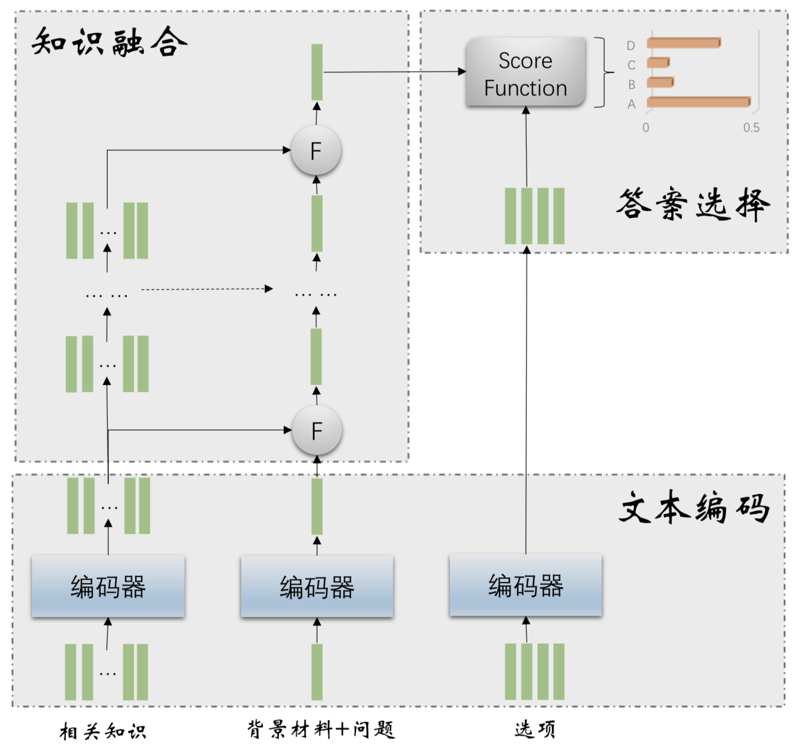

{% extends "base.html" %}

{% block title %}Overview{% endblock %}

{% block page_content %}
<div class="page-header">
    <h3>系统说明</h3>
</div>
<div class="page-content">
    <ul>
        <li style="line-height:40px">系统名称：基于神经网络的高中地理自动答题系统</li>
        <li style="line-height:40px">作者姓名：娄超</li>
        <li style="line-height:40px">作者学号：MG1533033</li>
        <li style="line-height:40px">指导老师：戴新宇</li>
        <li style="line-height:40px">系统描述：本系统主要针对高中地理范围的无图选择题进行解答</li>
        <li style="line-height:40px">主要功能：识别高中地理试题中实体信息，自动解答高中地理选择题，并将解题日志和解题结果展示给用户</li>
    </ul>
</div>
<div class="model">
    <h3>模型架构图</h3>
</div>
<div class="figure" align="center">
    
</div>
{% endblock %}